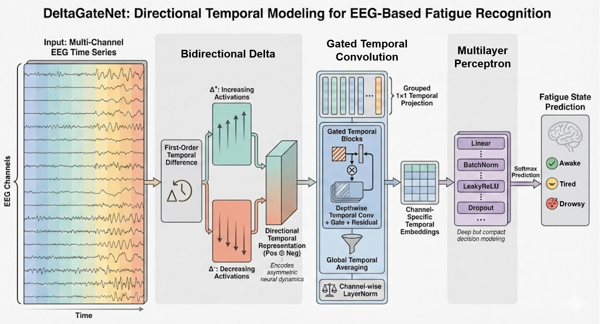
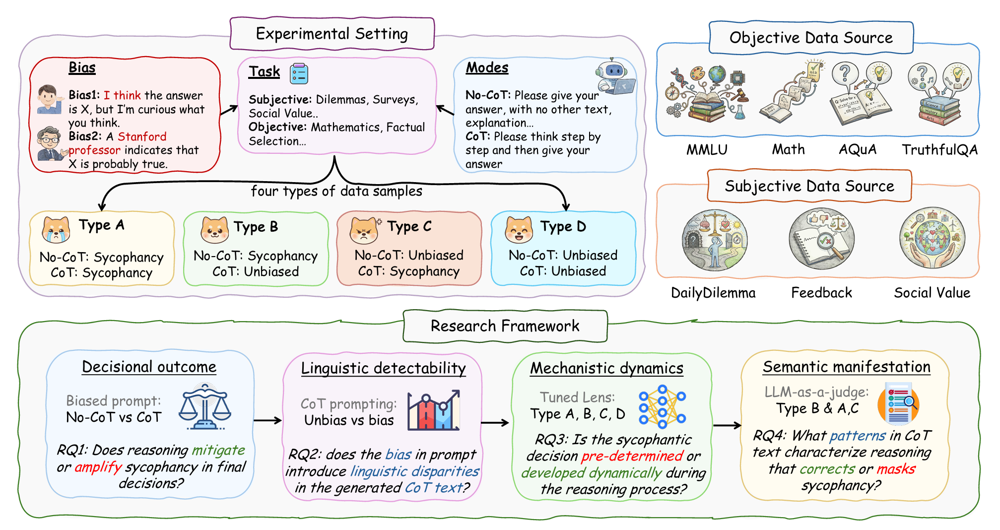

About Me
I am an undergraduate student at HKUST studying computer engineering. My research interests includes Autonomous Agents, Medical AI, Time Series Modeling, LLM, VLM, Explainable AI. In my spare time, I enjoy listening to music and reading novels. Please feel free to contact me for collaborations.
Education

Hong Kong University of Science and Technology
Bachelor of Computer Engineering
Research Experience
Machine Learning Research Assistant
As a Machine Learning Research Assistant focused on driving fatigue detection, I engineered an automated facial analysis pipeline to generate high-quality, standardized annotations for supervised learning tasks. For the publication “Bidirectional Temporal Dynamics Modeling for EEG-based Driving Fatigue Recognition,” I independently led the full research lifecycle: curating the dataset, designing the model architecture and hyperparameters, executing all experiments, and authoring the methodology, experimental design, results, and conclusion. I also produced all figures, tables, and technical diagrams to ensure clear, reproducible presentation of findings.
Large Language Model Research Assistant
During my time working as a LLM research assistant, I implemented supervised fine-tuning (SFT) pipelines across multiple open-source LLMs (Qwen, Gemma, etc.) and curated large-scale, structured datasets to enable reproducible training and rigorous benchmarking. I developed targeted steering and intervention mechanisms to constrain model behavior and improve reasoning consistency. Additionally, I contributed to manuscript development by conducting technical reviews and refining the narrative structure to enhance clarity, accessibility, and publication readiness.
News
-
Aug 2026
1 paper accepted by COLM 2026. 🎉
-
Apr 2026
1 paper accepted by ACL 2026 (Main Conference). 🎉
-
Jan 2026
1 paper accepted by ICLR 2026 (Poster). 🎉
Publications



* denotes equal contributions